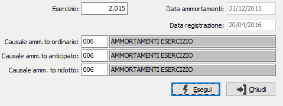

Annullamento contabilizzazione ammortamenti
Il programma effettua l'annullamento della contabilizzazione degli ammortamenti precedentemente generati dall'apposita procedura, producendo un report di controllo. Vengono annullati movimenti contabili caratterizzati dalle causali contabili inserite dall’utente.

ESERCIZIO: campo obbligatorio dove indicare il numero dell’esercizio in cui è stata fatta la contabilizzazione degli ammortamenti che desideriamo annullare, dall'esercizio vengono lette le date di ammortamento e di registrazione della contabilizzazione.
CAUSALI AMMORTAMENTO: vengono richieste le causali relative alla registrazione degli ammortamenti; sui campi sono attive le funzioni di ricerca (F9) sulla tabella causali contabili.